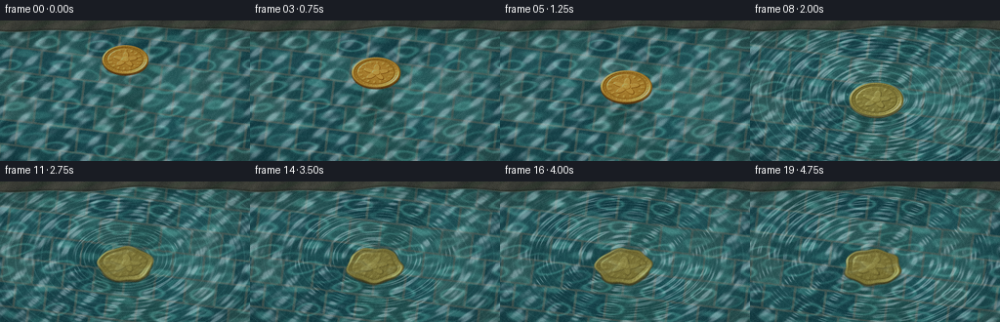
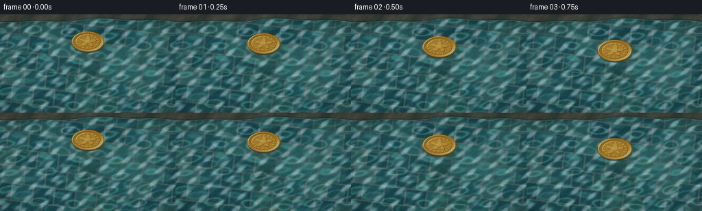

CODING AGENTS AS PIXEL WORLD MODELS
traex/DeepSeek-V4.1-Flash · mechanics_0012
点击播放 · 原生 RGB 像素
此结果可播放，但该运行尚未通过最终提交审核。页面展示不代表评测通过。
逐轮保存的候选
回放视频、检查图与代码变化。
每份候选均可单独播放。实际图片检查记录在下方工具轨迹中。
候选 01播放与检查图
点击播放 · 原生 RGB 像素


展开代码变化
--- 上一保存版本 +++ 本次保存版本 @@ -0,0 +1,542 @@ +from pathlib import Path + +import numpy as np +from PIL import Image +from scipy.ndimage import gaussian_filter, map_coordinates + +import artifact_io + + +WIDTH = 256 +HEIGHT = 144 +FRAMES = 20 +FPS = 4.0 +SUPERSAMPLE = 3 +SW = WIDTH * SUPERSAMPLE +SH = HEIGHT * SUPERSAMPLE + +CONTACT_TIME = 1.55 +SURFACE_Y = 78.0 + +YY, XX = np.mgrid[0:SH, 0:SW].astype(np.float32) +U = XX / SW +V = YY / SH + + +def smoothstep(edge0, edge1, value): + t = np.clip((value - edge0) / (edge1 - edge0), 0.0, 1.0) + return t * t * (3.0 - 2.0 * t) + + +def mix(a, b, amount): + return a + (b - a) * amount + + +def hash01(a, b, seed=0.0): + value = np.sin(a * 127.1 + b * 311.7 + seed) * 43758.5453 + return value - np.floor(value) + + +def make_tile_floor(): + angle = np.deg2rad(-7.0) + ca, sa = np.cos(angle), np.sin(angle) + fx = XX * ca - YY * sa + fy = XX * sa + YY * ca + + tile_w = 31.0 * SUPERSAMPLE + tile_h = 25.0 * SUPERSAMPLE + row = np.floor(fy / tile_h).astype(np.int32) + shifted_x = fx + (row % 2) * tile_w * 0.5 + col = np.floor(shifted_x / tile_w).astype(np.int32) + lx = shifted_x / tile_w - col + ly = fy / tile_h - row + + edge = np.minimum(np.minimum(lx, 1.0 - lx), np.minimum(ly, 1.0 - ly)) + tile_mask = smoothstep(0.024, 0.052, edge) + grout = 1.0 - tile_mask + + palette = np.array( + [ + [0.105, 0.320, 0.345], + [0.135, 0.370, 0.385], + [0.090, 0.285, 0.325], + [0.165, 0.405, 0.405], + [0.115, 0.340, 0.370], + [0.190, 0.390, 0.380], + [0.080, 0.260, 0.300], + [0.150, 0.365, 0.355], + ], + dtype=np.float32, + ) + selection = (hash01(col, row, 0.43) * len(palette)).astype(np.int32) + tile_color = palette[selection] + variation = 0.90 + 0.20 * hash01(col, row, 2.17)[..., None] + tile_color = tile_color * variation + + bevel = ( + 0.045 * (0.5 - lx) + + 0.032 * (0.5 - ly) + + 0.025 * smoothstep(0.07, 0.24, edge) + ) + tile_color = tile_color * (1.0 + bevel[..., None]) + tile_color += ( + 0.010 + * np.sin(fx * 0.48 + np.sin(fy * 0.18) * 2.0)[..., None] + * np.array([0.8, 1.0, 1.0], dtype=np.float32) + ) + + grout_color = np.array([0.38, 0.49, 0.45], dtype=np.float32) + grout_shadow = 0.82 + 0.16 * smoothstep(0.0, 0.05, edge) + grout_rgb = grout_color * grout_shadow[..., None] + floor = mix(grout_rgb, tile_color, tile_mask[..., None]) + + # Soft mineral sediment catches light in the grout lines. + mineral = (0.5 + 0.5 * np.sin(fx * 0.31 + fy * 0.19)) ** 8 + floor += mineral[..., None] * np.array([0.018, 0.030, 0.025], dtype=np.float32) + return floor + + +FLOOR = make_tile_floor() + + +def make_stone_ledge(): + boundary = ( + 9.5 * SUPERSAMPLE + + 2.1 * SUPERSAMPLE * np.sin(U * np.pi * 2.2 + 0.4) + + 1.2 * SUPERSAMPLE * np.sin(U * np.pi * 5.7 + 1.1) + ) + mask = 1.0 - smoothstep(boundary - 1.0 * SUPERSAMPLE, boundary + 0.7 * SUPERSAMPLE, YY) + + texture = ( + 0.48 + + 0.16 * np.sin(XX * 0.035 + np.sin(YY * 0.026) * 2.2) + + 0.09 * np.sin(XX * 0.083 + YY * 0.019) + + 0.04 * np.sin(XX * 0.21 + YY * 0.17) + ) + stone = mix( + np.array([0.16, 0.185, 0.17], dtype=np.float32), + np.array([0.39, 0.395, 0.34], dtype=np.float32), + np.clip(texture, 0.0, 1.0)[..., None], + ) + moss = smoothstep(0.55, 0.90, 0.5 + 0.5 * np.sin(XX * 0.045 + YY * 0.12 + 0.8)) + stone = mix(stone, np.array([0.18, 0.30, 0.20], dtype=np.float32), moss[..., None] * 0.22) + + wet = np.exp(-((YY - boundary + 0.2 * SUPERSAMPLE) / (1.7 * SUPERSAMPLE)) ** 2) + stone = mix(stone, np.array([0.055, 0.075, 0.070], dtype=np.float32), wet[..., None] * 0.62) + return stone, mask, boundary + + +STONE, STONE_MASK, STONE_BOUNDARY = make_stone_ledge() + + +def coin_motion(t): + if t < CONTACT_TIME: + phase = t / CONTACT_TIME + center_y = 40.0 + (SURFACE_Y - 40.0) * (0.23 * phase + 0.77 * phase**1.65) + radius = 23.8 + 3.5 * (center_y - 40.0) / (SURFACE_Y - 40.0) + else: + dt = t - CONTACT_TIME + settle = 1.0 - np.exp(-dt / 1.28) + center_y = SURFACE_Y + 9.6 * settle + radius = 27.3 + 1.25 * settle + + center_x = 128.0 + 1.8 * np.sin(t * 0.78 + 0.15) + return center_x, center_y, radius + + +def make_coin(t): + cx, cy, radius = coin_motion(t) + cx *= SUPERSAMPLE + cy *= SUPERSAMPLE + radius *= SUPERSAMPLE + aspect = 0.625 + + theta = np.deg2rad(4.0 + t * 2.8) + ca, sa = np.cos(theta), np.sin(theta) + dx = (XX - cx) / radius + dy = (YY - cy) / (radius * aspect) + lx = ca * dx + sa * dy + ly = -sa * dx + ca * dy + rr = np.sqrt(lx * lx + ly * ly) + + face_alpha = 1.0 - smoothstep(0.985, 1.012, rr) + dxb = (XX - cx) / radius + dyb = (YY - (cy + 1.7 * SUPERSAMPLE)) / (radius * aspect) + rrb = np.sqrt(dxb * dxb + dyb * dyb) + side_alpha = 1.0 - smoothstep(0.980, 1.010, rrb) + + angle = np.arctan2(ly, lx) + + height = 0.040 * (1.0 - rr) + height += 0.105 * np.exp(-((rr - 0.935) / 0.050) ** 2) + height -= 0.038 * np.exp(-((rr - 0.775) / 0.026) ** 2) + + star_boundary = 0.375 + 0.155 * np.cos(5.0 * (angle + np.pi * 0.5)) + star_metric = rr / np.maximum(star_boundary, 0.08) + star = 1.0 - smoothstep(0.94, 1.04, star_metric) + height += 0.090 * star + height += 0.055 * (1.0 - smoothstep(0.145, 0.170, rr)) + + ray_window = smoothstep(0.54, 0.59, rr) * (1.0 - smoothstep(0.700, 0.750, rr)) + rays = (0.5 + 0.5 * np.cos(16.0 * angle + 0.18)) ** 3 + height += 0.024 * rays * ray_window + + bead_window = np.exp(-((rr - 0.835) / 0.022) ** 2) + beads = (0.5 + 0.5 * np.cos(30.0 * angle)) ** 6 + height += 0.020 * beads * bead_window + + micro = ( + 0.0035 * np.sin(lx * 235.0 + np.sin(ly * 37.0) * 2.0) + + 0.0025 * np.sin(ly * 310.0 + lx * 21.0) + ) + height += micro + + hx, hy = np.gradient(height) + nx = -hx * 25.0 + ny = -hy * 25.0 + nz = np.ones_like(nx) + norm = np.sqrt(nx * nx + ny * ny + nz * nz) + nx /= norm + ny /= norm + nz /= norm + + light = np.array([-0.50, -0.58, 0.64], dtype=np.float32) + light /= np.linalg.norm(light) + half = light + np.array([0.0, 0.0, 1.0], dtype=np.float32) + half /= np.linalg.norm(half) + + diffuse = np.clip(nx * light[0] + ny * light[1] + nz * light[2], 0.0, 1.0) + specular = np.clip(nx * half[0] + ny * half[1] + nz * half[2], 0.0, 1.0) ** 42 + gloss = np.clip(nx * half[0] + ny * half[1] + nz * half[2], 0.0, 1.0) ** 8 + + height_relief = np.clip((height + 0.055) / 0.20, 0.0, 1.0) + gold_dark = np.array([0.30, 0.165, 0.045], dtype=np.float32) + gold_mid = np.array([0.70, 0.455, 0.115], dtype=np.float32) + gold_light = np.array([1.02, 0.79, 0.34], dtype=np.float32) + tone = np.clip(0.22 + 0.72 * diffuse + 0.16 * height_relief, 0.0, 1.0) + color = mix(gold_dark, gold_mid, smoothstep(0.0, 0.68, tone)[..., None]) + color = mix(color, gold_light, (smoothstep(0.63, 1.0, tone) * 0.60)[..., None]) + color *= (0.82 + 0.24 * height_relief)[..., None] + color += specular[..., None] * np.array([0.95, 0.78, 0.42], dtype=np.float32) * 0.92 + color += gloss[..., None] * np.array([0.28, 0.20, 0.08], dtype=np.float32) + + serration_band = smoothstep(0.920, 0.950, rr) * (1.0 - smoothstep(0.985, 1.0, rr)) + serration = 0.5 + 0.5 * np.cos(68.0 * angle) + color *= (1.0 - serration_band * (0.10 - 0.10 * serration))[..., None] + + patina = (1.0 - smoothstep(0.05, 0.32, height_relief)) * 0.05 + color = mix(color, np.array([0.22, 0.28, 0.16], dtype=np.float32), patina[..., None]) + + face_rgb = np.clip(color, 0.0, 1.5) + + side_color = np.array([0.34, 0.19, 0.045], dtype=np.float32) + side_light = ( + 0.72 + + 0.22 * smoothstep(-0.7, 0.7, dyb) + + 0.10 * smoothstep(0.75, 1.0, rrb) + ) + side_rgb = side_color * side_light[..., None] + + alpha = np.maximum(face_alpha, side_alpha * 0.90) + rgb = side_rgb + rgb = mix(rgb, face_rgb, face_alpha[..., None]) + return rgb, alpha, cx / SUPERSAMPLE, cy / SUPERSAMPLE, radius / SUPERSAMPLE + + +def make_water(t): + water_tint = np.array([0.020, 0.145, 0.155], dtype=np.float32) + depth_gradient = (0.90 + 0.12 * V)[..., None] + water = FLOOR * 0.70 * depth_gradient + water_tint * 0.30 + + phase1 = np.pi * 2.0 * (U * 5.1 + 0.20 * np.sin(V * 8.7 + t * 0.42)) + phase2 = np.pi * 2.0 * (V * 6.8 + 0.17 * np.sin(U * 7.9 - t * 0.33)) + phase3 = np.pi * 2.0 * ((U + V) * 3.8 + 0.13 * np.sin((U - V) * 12.0 + t * 0.22)) + caustic_field = np.sin(phase1) + np.sin(phase2) + 0.72 * np.sin(phase3) + caustic = np.exp(-((caustic_field - 1.32) / 0.39) ** 2) + caustic += 0.58 * np.exp(-((caustic_field + 1.22) / 0.44) ** 2) + caustic = gaussian_filter(caustic.astype(np.float32), 0.8) + caustic = np.clip(caustic, 0.0, 1.35) + water += caustic[..., None] * np.array([0.105, 0.240, 0.210], dtype=np.float32) + + # Broad sky reflection keeps the liquid readable without hiding the pool floor. + sheen = 0.035 + 0.025 * (1.0 - V) + 0.012 * np.sin(U * 8.0 + t * 0.2) + water += sheen[..., None] * np.array([0.55, 0.76, 0.80], dtype=np.float32) + + ambient = ( + 0.28 * np.sin(np.pi * 2.0 * (U * 9.0 + V * 3.0 + t * 0.09)) + + 0.17 * np.sin(np.pi * 2.0 * (U * 4.0 - V * 7.0 - t * 0.07)) + + 0.08 * np.sin(np.pi * 2.0 * (U * 15.0 + V * 11.0 + t * 0.17)) + ) + + cx, cy, radius = coin_motion(t) + cx_s = cx * SUPERSAMPLE + cy_s = cy * SUPERSAMPLE + + # Soft shadow in the shallow water, strongest once the coin reaches the surface. + above = max(0.0, SURFACE_Y - (cy + radius * 0.625)) + shadow_strength = 0.13 + 0.25 * (1.0 - np.clip(above / 34.0, 0.0, 1.0)) + shadow_cx = cx_s + 2.0 * SUPERSAMPLE + shadow_cy = SURFACE_Y * SUPERSAMPLE + 10.0 * SUPERSAMPLE + shadow_radius = max(radius, 27.0) * SUPERSAMPLE + shadow_mask = np.exp( + -1.65 + * ( + ((XX - shadow_cx) / (shadow_radius * 1.10)) ** 2 + + ((YY - shadow_cy) / (shadow_radius * 0.58)) ** 2 + ) + ) + shadow_mask = gaussian_filter(shadow_mask.astype(np.float32), 7.0 * SUPERSAMPLE) + water *= 1.0 - shadow_strength * shadow_mask[..., None] + + ripple_height = ambient.copy() + age_total = t - CONTACT_TIME + if age_total >= 0.0: + radial = np.sqrt( + ((XX - cx_s) / 1.0) ** 2 + + ((YY - SURFACE_Y * SUPERSAMPLE) / 0.635) ** 2 + ) + for delay, speed, amplitude in ( + (0.0, 35.0 * SUPERSAMPLE, 1.12), + (0.44, 31.0 * SUPERSAMPLE, 0.68), + (0.92, 27.0 * SUPERSAMPLE, 0.38), + ): + age = age_total - delay + if age <= 0.0: + continue + front = speed * age + envelope = np.exp(-((radial - front) / (14.0 * SUPERSAMPLE)) ** 2) + wavelength = 8.7 * SUPERSAMPLE + ripple_height += ( + amplitude + * np.cos(np.pi * 2.0 * (radial - front) / wavelength) + * envelope + * np.exp(-age / 2.35) + ) + + capillary = ( + 0.11 + * np.sin(radial * 0.34 - age_total * 9.5) + * np.exp(-age_total / 2.8) + * np.exp(-radial / (170.0 * SUPERSAMPLE)) + * smoothstep(0.0, 0.22, age_total) + ) + ripple_height += capillary + + gy, gx = np.gradient(ripple_height.astype(np.float32)) + offset_x = np.clip(gx * 13.0, -8.0 * SUPERSAMPLE, 8.0 * SUPERSAMPLE) + offset_y = np.clip(gy * 13.0, -6.0 * SUPERSAMPLE, 6.0 * SUPERSAMPLE) + coords = [YY + offset_y, XX + offset_x] + warped = np.empty_like(water) + for channel in range(3): + warped[..., channel] = map_coordinates( + water[..., channel], coords, order=1, mode="reflect", prefilter=False + ) + + nx = -gx * 8.0 + ny = -gy * 8.0 + nz = np.ones_like(nx) + norm = np.sqrt(nx * nx + ny * ny + nz * nz) + nx /= norm + ny /= norm + nz /= norm + light = np.array([-0.36, -0.52, 0.775], dtype=np.float32) + light /= np.linalg.norm(light) + half = light + np.array([0.0, 0.0, 1.0], dtype=np.float32) + half /= np.linalg.norm(half) + ndoth = np.clip(nx * half[0] + ny * half[1] + nz * half[2], 0.0, 1.0) + specular = ndoth**48 + broad = ndoth**10 + warped += (specular * 0.42 + broad * 0.022)[..., None] * np.array( + [0.84, 0.96, 1.0], dtype=np.float32 + ) + + if age_total >= 0.0: + # A crisp crest highlight makes the concentric wave readable at 256 px. + crest_phase = np.cos(np.pi * 2.0 * (radial - 35.0 * SUPERSAMPLE * age_total) / (8.7 * SUPERSAMPLE)) + crest = np.clip(crest_phase, 0.0, 1.0) ** 10 + crest *= np.exp(-age_total / 2.0) * smoothstep(0.0, 0.18, age_total) + warped += crest[..., None] * np.array([0.10, 0.17, 0.16], dtype=np.float32) + + # The wet stone rim sits above the water and is not refracted. + rim_shadow = np.exp(-((YY - STONE_BOUNDARY) / (2.4 * SUPERSAMPLE)) ** 2) + warped *= 1.0 - 0.18 * rim_shadow[..., None] * (1.0 - STONE_MASK[..., None]) + warped = mix(warped, STONE, STONE_MASK[..., None]) + waterline = np.exp(-((YY - STONE_BOUNDARY + 0.4 * SUPERSAMPLE) / (0.65 * SUPERSAMPLE)) ** 2) + warped += waterline[..., None] * np.array([0.13, 0.17, 0.15], dtype=np.float32) + + return np.clip(warped, 0.0, 1.5), (gx, gy), specular + + +def add_droplets(image, t): + age = t - CONTACT_TIME + if age < 0.03 or age > 0.95: + return image + + cx, cy, radius = coin_motion(t) + result = image.copy() + for index in range(7): + launch = index * 0.027 + local_age = age - launch + if local_age <= 0.0 or local_age > 0.60: + continue + angle = -0.35 + index * (np.pi * 2.0 / 7.0) + ellipse_x = np.cos(angle) * radius * 1.00 + ellipse_y = np.sin(angle) * radius * 0.625 + drift = 2.8 + 0.8 * index + px = (cx + ellipse_x + np.cos(angle) * drift * local_age) * SUPERSAMPLE + py = ( + cy + + ellipse_y + - (11.5 * local_age - 12.0 * local_age * local_age) + - 0.8 + ) * SUPERSAMPLE + drop_radius = (0.65 + 0.18 * np.sin(index * 1.7)) * SUPERSAMPLE + spot = np.exp( + -(((XX - px) / drop_radius) ** 2 + ((YY - py) / (drop_radius * 1.15)) ** 2) * 1.6 + ) + core = np.exp( + -(((XX - px + 0.25 * SUPERSAMPLE) / (drop_radius * 0.38)) ** 2 + + ((YY - py + 0.35 * SUPERSAMPLE) / (drop_radius * 0.32)) ** 2) + * 1.7 + ) + result += spot[..., None] * np.array([0.16, 0.21, 0.20], dtype=np.float32) + result += core[..., None] * np.array([0.52, 0.62, 0.58], dtype=np.float32) + return np.clip(result, 0.0, 1.6) + + +def add_contact_glint(image, t): + age = t - CONTACT_TIME + if age < -0.25 or age > 1.4: + return image + cx, cy, radius = coin_motion(t) + strength = smoothstep(-0.25, 0.02, age) * np.exp(-max(age, 0.0) / 0.85) + radial = np.sqrt( + ((XX - cx * SUPERSAMPLE) / (radius * SUPERSAMPLE * 1.015)) ** 2 + + ((YY - cy * SUPERSAMPLE) / (radius * SUPERSAMPLE * 0.625 * 1.015)) ** 2 + ) + ring = np.exp(-((radial - 1.0) / 0.018) ** 2) + angle = np.arctan2( + (YY - cy * SUPERSAMPLE) / 0.625, + XX - cx * SUPERSAMPLE, + ) + glint = ring * (0.45 + 0.55 * (0.5 + 0.5 * np.cos(angle * 3.0 + 0.5))) + image = image + glint[..., None] * strength * np.array([0.34, 0.43, 0.39], dtype=np.float32) + return np.clip(image, 0.0, 1.6) + + +def composite_coin(image, t): + coin_rgb, coin_alpha, cx, cy, radius = make_coin(t) + submersion = smoothstep(SURFACE_Y + 0.4, SURFACE_Y + 7.5, cy) + + if submersion > 0.01: + # Slight underwater displacement and diffusion keep the coin in the same optical space. + local_dx = 1.7 * SUPERSAMPLE * submersion * np.sin(YY * 0.11 + XX * 0.025 + t * 4.0) + local_dy = 0.8 * SUPERSAMPLE * submersion * np.sin(XX * 0.09 - t * 3.2) + coords = [YY + local_dy, XX + local_dx] + shifted = np.empty_like(coin_rgb) + for channel in range(3): + shifted[..., channel] = map_coordinates( + coin_rgb[..., channel], coords, order=1, mode="constant", cval=0.0, prefilter=False + ) + shifted_alpha = map_coordinates( + coin_alpha, coords, order=1, mode="constant", cval=0.0, prefilter=False + ) + sigma = 0.45 * SUPERSAMPLE * submersion + for channel in range(3): + shifted[..., channel] = gaussian_filter(shifted[..., channel], sigma) + shifted_alpha = gaussian_filter(shifted_alpha, sigma) + coin_rgb = mix(coin_rgb, shifted, submersion) + coin_alpha = mix(coin_alpha, shifted_alpha, submersion) + + water_filter = np.array([0.72, 0.88, 0.88], dtype=np.float32) + coin_rgb = coin_rgb * water_filter + np.array([0.018, 0.070, 0.076], dtype=np.float32) + coin_rgb *= 1.0 - 0.12 * submersion + + alpha = np.clip(coin_alpha * 0.995, 0.0, 1.0)[..., None] + result = image * (1.0 - alpha) + np.clip(coin_rgb, 0.0, 1.5) * alpha + + # Water caustics and a little surface sheen pass over a submerged face. + if submersion > 0.01: + phase1 = np.pi * 2.0 * (U * 5.1 + 0.20 * np.sin(V * 8.7 + t * 0.42)) + phase2 = np.pi * 2.0 * (V * 6.8 + 0.17 * np.sin(U * 7.9 - t * 0.33)) + caustic = np.exp(-((np.sin(phase1) + np.sin(phase2) - 0.85) / 0.45) ** 2) + result += (alpha[..., 0] * caustic * submersion * 0.09)[..., None] * np.array( + [0.52, 0.78, 0.72], dtype=np.float32 + ) + surface_sheen = ( + 0.5 + 0.5 * np.sin(XX * 0.013 + YY * 0.027 + t * 0.8) + ) * submersion * alpha[..., 0] * 0.025 + result += surface_sheen[..., None] * np.array([0.55, 0.72, 0.74], dtype=np.float32) + + result = add_contact_glint(result, t) + result = add_droplets(result, t) + return np.clip(result, 0.0, 1.5) + + +def camera_crop(image, t): + progress = t / ((FRAMES - 1) / FPS) + zoom = 1.0 + 0.021 * progress + crop_w = int(round(SW / zoom)) + crop_h = int(round(SH / zoom)) + left = (SW - crop_w) // 2 + int(round(1.5 * SUPERSAMPLE * progress)) + top = (SH - crop_h) // 2 + pil = Image.fromarray(np.clip(image * 255.0, 0.0, 255.0).astype(np.uint8), mode="RGB") + pil = pil.crop((left, top, left + crop_w, top + crop_h)) + return np.asarray(pil.resize((SW, SH), Image.Resampling.LANCZOS), dtype=np.float32) / 255.0 + + +def post_process(image, frame_index): + highlights = np.clip(image - 0.72, 0.0, None) + bloom = np.empty_like(highlights) + for channel in range(3): + bloom[..., channel] = gaussian_filter(highlights[..., channel], 3.2 * SUPERSAMPLE) + image = image + bloom * 0.20 + + image = camera_crop(image, frame_index / FPS) + image = np.asarray( + Image.fromarray(np.clip(image * 255.0, 0.0, 255.0).astype(np.uint8), mode="RGB").resize( + (WIDTH, HEIGHT), Image.Resampling.LANCZOS + ), + dtype=np.float32, + ) / 255.0 + + vignette_x = (np.arange(WIDTH, dtype=np.float32) - WIDTH * 0.5) / (WIDTH * 0.5) + vignette_y = (np.arange(HEIGHT, dtype=np.float32) - HEIGHT * 0.5) / (HEIGHT * 0.5) + vx, vy = np.meshgrid(vignette_x, vignette_y) + vignette = np.clip(1.0 - 0.13 * (vx * vx * 0.75 + vy * vy), 0.0, 1.0) + image *= vignette[..., None] + + image = 1.0 - np.exp(-image * 1.18) + image = np.clip((image - 0.5) * 1.035 + 0.5, 0.0, 1.0) + image[..., 0] *= 1.012 + image[..., 2] *= 1.008 + + rng = np.random.default_rng(9100 + frame_index) + grain = rng.normal(0.0, 0.009, size=(HEIGHT, WIDTH, 1)).astype(np.float32) + image = np.clip(image + grain, 0.0, 1.0) + return np.round(image * 255.0).astype(np.uint8) + + +def render_frame(frame_index): + t = frame_index / FPS + water, _, _ = make_water(t) + frame = composite_coin(water, t) + return post_process(frame, frame_index) + + +def main(): + frames = np.stack([render_frame(index) for index in range(FRAMES)], axis=0) + artifact_io.save(frames, Path(__file__).resolve().parent) + print( + "saved", + frames.shape, + frames.dtype, + "min/max/mean", + int(frames.min()), + int(frames.max()), + float(frames.mean()), + ) + + +if __name__ == "__main__": + main()
可观测工具轨迹
实际执行的命令与返回图片。
命令 1exit 0
/bin/bash -c 'cat prompt.txt'
命令 2exit 0
/bin/bash -c 'cat GENERATION_RULES.md'
命令 3exit 0
/bin/bash -c 'cat task_spec.json'
命令 4exit 0
/bin/bash -c "find . -maxdepth 2 -type f -printf '%p\\n' | sort"
命令 5exit 0
/bin/bash -c "sed -n '1,260p' artifact_io.py"
命令 6exit 0
/bin/bash -c "sed -n '1,260p' player_template.html"
命令 7exit 0
/bin/bash -c "python - <<'PY' import importlib.util for m in ['numpy','PIL','cv2','scipy','matplotlib','imageio']: print(m, bool(importlib.util.find_spec(m))) PY"
命令 8exit 0
/bin/bash -c 'python generate.py'
命令 9exit 0
/bin/bash -c 'command -v chafa || command -v viu || command -v jp2 || command -v img2txt || true'
命令 10exit 127
/bin/bash -c 'ls -lh index.html pixels.npz inspection.png frames/00.png frames/19.png && file index.html pixels.npz inspection.png'
命令 11exit 0
/bin/bash -c "python - <<'PY'
from PIL import Image
import numpy as np
im=np.asarray(Image.open('inspection.png'))
print('inspection',im.shape)
frames=np.load('pixels.npz')['pixels']
print('pixels',frames.shape,frames.dtype)
# unpack and report per-frame motion / color stats
rgb=np.stack([(frames>>16)&255,(frames>>8)&255,frames&255],-1)
for i in range(len(rgb)):
f=rgb[i]
d=np.abs(f.astype(int)-rgb[max(0,i-1)].astype(int)).mean() if i else 0
print(f'{i:02d} mean={f.mean(axis=(0,1)).round(1)} std={f.std():.1f} motion={d:.2f}')
PY"命令 12exit 0
/bin/bash -c "python - <<'PY'
from PIL import Image, ImageDraw
import numpy as np
chars=' .:-=+*#%@'
for idx in [0,5,10,13,14,16,19]:
im=np.asarray(Image.open(f'frames/{idx:02d}.png').convert('RGB')).astype(float)
h,w=im.shape[:2]
# crop subject region? entire image at 64x36 average
out=Image.fromarray(im.astype('uint8')).resize((64,36),Image.Resampling.BOX)
a=np.asarray(out).mean(2)
lo,hi=np.percentile(a,[2,98])
q=np.clip((a-lo)/(hi-lo+1e-6),0,1)
lines=[''.join(chars[min(len(chars)-1,int(v*(len(chars)-1)))] for v in row) for row in q]
print('\\nFRAME',idx)
print('\\n'.join(lines))
PY"命令 13exit 0
/bin/bash -c "python - <<'PY'
from PIL import Image
import numpy as np
chars=' .,:;irsXA253hMHGS#9B&@'
for idx in [0,3,6,8,10,14,19]:
a=np.asarray(Image.open(f'frames/{idx:02d}.png').convert('RGB')).astype(float)
a=a[18:136,68:188]
a=np.asarray(Image.fromarray(a.astype('uint8')).resize((60,34),Image.Resampling.BOX)).astype(float)
lum=a.mean(2)
lo,hi=np.percentile(lum,[3,97])
q=np.clip((lum-lo)/(hi-lo+1e-6),0,1)
print('\\nFRAME',idx)
for row in q:
print(''.join(chars[min(len(chars)-1,int(v*(len(chars)-1)))] for v in row))
PY"命令 14exit 0
/bin/bash -c "python - <<'PY'
from PIL import Image
import numpy as np
packed=np.load('pixels.npz')['pixels'].transpose(2,0,1)
rgb=np.stack([(packed>>16)&255,(packed>>8)&255,packed&255],-1)
prev=None
for i,f in enumerate(rgb):
d=np.abs(f.astype(int)-prev.astype(int)).mean() if prev is not None else 0
print(f'{i:02d} mean={f.mean(axis=(0,1)).round(1)} std={f.std():.1f} motion={d:.2f}')
prev=f
print('pixel image check',np.array_equal(rgb[0],np.asarray(Image.open('frames/00.png'))))
PY"保存候选 1 份；完成命令 14 次；可验证图片返回 0 张。原始 API 响应与完整日志保留在本地。